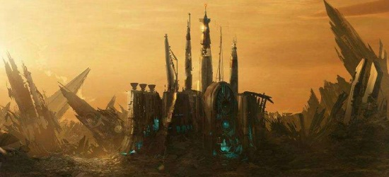

Republic
The Galactic Republic, often referred to as simply the Republic, is an interstellar state, where it existed prior to the establishment of the Galactic Empire. Also referred to as the Old Republic, and was around up until the end of the Clone Wars.

Seperatists
The Seperatist Council was an executive corps in charge of the Confederacy of Independent Systems (CIS) during the Clone Wars, the conflict between the Galactic Republic and the Confederacy itself, which was seeking to leave the former.
